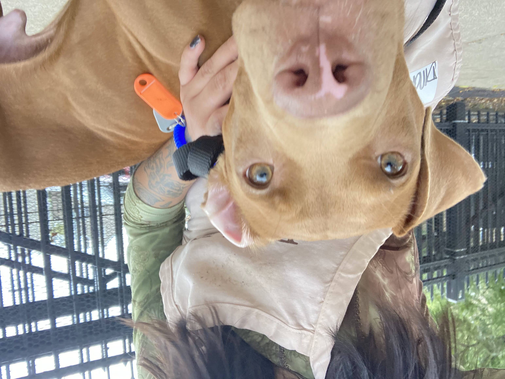
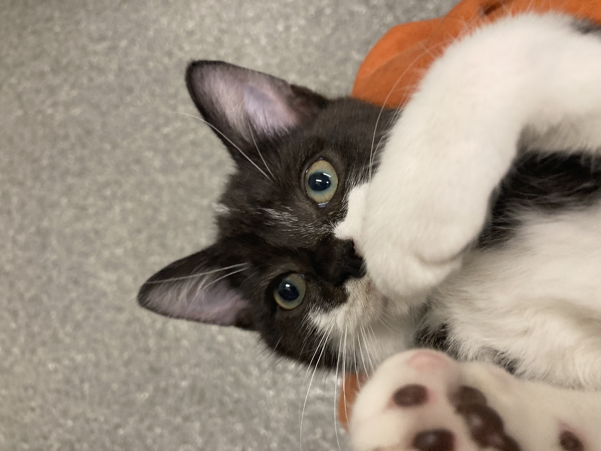
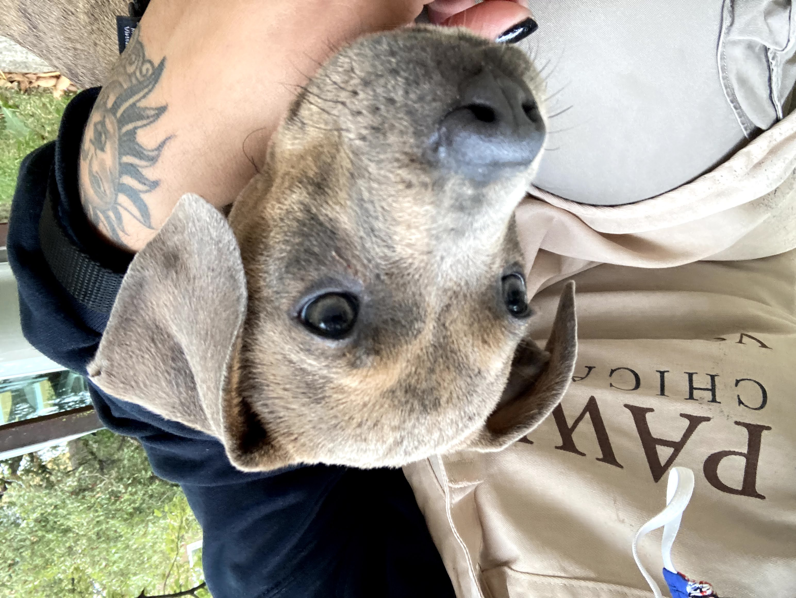
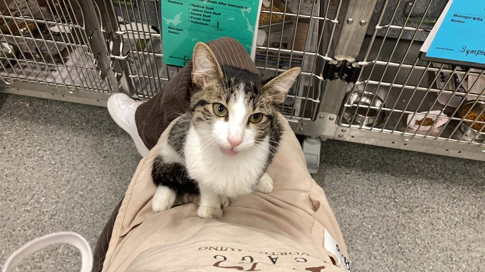

Education:
- Illinois Institute Of Technology(2024)
- Mansueto High School(2020)
Email:dsaldivar@hawk.iit.edu
Located:Chicago IL, & North Chicago
Linkedin: Dinora
Paws: 2019-now
Located: 3516 W 26th St, Chicago, IL 60623
I started volunteering at Paws because in 2019, I lost my dog. I was having a hard time. To cope with my dogs loss, I wanted to give back to animals who didn't have homes. Since then, I love these animals, I take them for walks, play with them. I have realized how much more help they do for me than me to them. I often go to paws like therapy. Whenever I feel down or stressed I go to Paws.
   